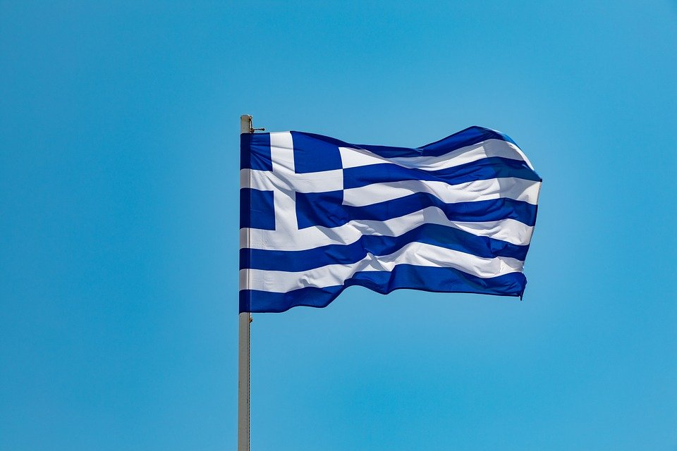

SEKILAS TENTANG YUNANI


|  | ||
| Nama Negara | : | Yunani |
| Ibu Kota | : | Athena |
| Tanggal Kemerdekaan | : | 25 Maret 1821 |
| Bentuk Pemerintahan | : | Republik Parlementer |
| Bahasa Resmi | : | Yunani |
| Mata Uang | : | Euro (€) |
| Zona Waktu | : | Waktu Eropa Timur (EET) (UTC+2) |
| Kode Telepon | : | +30 |
1. Santorini
Santorini merupakan kelompok bundar pulau gunung berapi di Laut Aegea, terletak 200 km dari daratan Yunani. Pulau ini merupakan kelompok Kepulauan Cyclades. Pulau ini memiliki luas wilayah 73 km². Pulau ini dikenal karena sektor pariwisata dan industri wine-nya. Santorini juga memiliki beberapa situs bersejarah dan dulunya merupakan salah satu pusat peradaban yang penting.


2. Parthenon
Parthenon (Yunani Kuno: Παρθενών) adalah kuil Yunani yang dibangun untuk dewi Athena, pelindung Athena pada abad ke-5 SM. Parthenon dianggap sebagai simbol Yunani Kuno dan demokrasi Athena, dan merupakan salah satu monumen budaya terbesar dunia.

3. Mykonos
Mykonos merupakan sebuah pulau di Yunani. Pulau ini terletak di bagian selatan, tepatnya di region Aegea Selatan. Pulau ini memiliki luas wilayah 105,2 km².